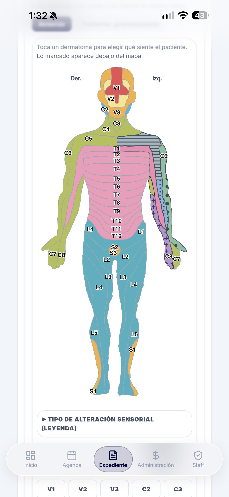

<!doctype html>
<html lang="es">
<head>
<meta charset="utf-8">
<title>Physioverse · Dermatomas</title>
<style>
  * { box-sizing: border-box; margin: 0; padding: 0; }
  html, body { width: 1080px; height: 1920px; overflow: hidden; background: #0b1120; font-family: 'Inter', sans-serif; }
  #video { position: relative; width: 1080px; height: 1920px; overflow: hidden; background: #0b1120; }
  .abs { position: absolute; }
  .blob { position: absolute; border-radius: 50%; filter: blur(90px); }
  #phoneWrap { position: absolute; left: 0; top: 0; transform-origin: 0 0; }
  #bezel { position: absolute; left: -38px; top: -38px; width: 1264px; height: 2652px; border-radius: 178px;
           background: linear-gradient(145deg, #2a3142, #05070d 40%, #1a2030); box-shadow: 0 60px 160px rgba(0,0,0,.65), inset 0 0 0 4px rgba(255,255,255,.08); }
  #screen { position: absolute; left: 0; top: 0; width: 1188px; height: 2576px; border-radius: 142px; overflow: hidden; background: #eff2f7; }
  .layer { position: absolute; left: 0; top: 0; width: 1188px; height: 2576px; }
  .layer > img { position: absolute; left: 0; top: 0; width: 1188px; height: 2576px; }
  #finger { position: absolute; width: 96px; height: 96px; margin: -48px 0 0 -48px; border-radius: 50%; z-index: 30;
            background: rgba(255,255,255,.55); border: 5px solid rgba(255,255,255,.95); box-shadow: 0 10px 30px rgba(0,0,0,.35); }
  #ripple { position: absolute; width: 96px; height: 96px; margin: -48px 0 0 -48px; border-radius: 50%; border: 6px solid #fff; z-index: 30; }
  #captionShade { position: absolute; left: 0; top: 0; width: 1080px; height: 640px; background: linear-gradient(#0b1120 62%, rgba(11,17,32,0)); }
  .cap { position: absolute; left: 44px; right: 44px; top: 100px; text-align: center; }
  .cap h1 { color: #fff; font-size: 94px; font-weight: 900; letter-spacing: -2px; line-height: 1.02; text-shadow: 0 6px 30px rgba(0,0,0,.55); }
  .cap h1 span { display: inline-block; }
  .cap p { margin-top: 22px; color: #5eead4; font-size: 46px; font-weight: 700; text-shadow: 0 4px 20px rgba(0,0,0,.5); }
  .clip { position: absolute; left: 0; width: 1080px; overflow: hidden; }
  .clip img { position: absolute; left: 0; top: 0; width: 1080px; }
  .clip::after { content: ''; position: absolute; inset: 0; background: linear-gradient(#0b1120, rgba(11,17,32,0) 12%, rgba(11,17,32,0) 86%, #0b1120); }
  .chip { position: absolute; display: flex; align-items: center; gap: 16px; height: 84px; padding: 0 28px 0 16px; border-radius: 42px; white-space: nowrap;
          background: #fff; box-shadow: 0 14px 34px rgba(15,23,42,.28); font-size: 34px; font-weight: 800; color: #0f172a; transform-origin: 100% 50%; }
  .sw { width: 54px; height: 54px; border-radius: 14px; border: 2px solid rgba(15,23,42,.25); flex: none; }
</style>
</head>
<body>
<div id="video"></div>
<script>
const V = document.getElementById('video');
const clamp = (x, a = 0, b = 1) => Math.min(b, Math.max(a, x));
const lerp = (a, b, k) => a + (b - a) * k;
const prog = (t, t0, t1) => clamp((t - t0) / (t1 - t0));
const eio = k => k < .5 ? 4 * k * k * k : 1 - Math.pow(-2 * k + 2, 3) / 2;
const eout = k => 1 - Math.pow(1 - k, 3);
const eback = k => { const c1 = 1.70158, c3 = c1 + 1; return 1 + c3 * Math.pow(k - 1, 3) + c1 * Math.pow(k - 1, 2); };
const el = (html) => { const d = document.createElement('div'); d.innerHTML = html.trim(); return d.firstChild; };
const add = (parent, html) => parent.appendChild(el(html));
const pop = (t, t0, d = .35) => { const k = eback(prog(t, t0, t0 + d)); return { o: clamp(k * 1.5), s: lerp(.5, 1, k) }; };

add(V, '<div class="blob" id="b1" style="width:760px;height:760px;background:rgba(45,212,191,.22)"></div>');
add(V, '<div class="blob" id="b2" style="width:820px;height:820px;background:rgba(139,92,246,.26)"></div>');
function drawBg(t) {
  document.getElementById('b1').style.transform = `translate(${-260 + 90 * Math.sin(t * .6)}px,${120 + 70 * Math.cos(t * .5)}px)`;
  document.getElementById('b2').style.transform = `translate(${520 + 80 * Math.cos(t * .45)}px,${1150 + 90 * Math.sin(t * .55)}px)`;
}

const S = 0.56, CX = 540, CY = 1225;
const pw = add(V, '<div id="phoneWrap"><div id="bezel"></div><div id="screen"></div></div>');
const scr = pw.querySelector('#screen');
const box = (parent, x, y, w, h, css = '', inner = '') => add(parent, `<div class="abs" style="left:${x}px;top:${y}px;width:${w}px;height:${h}px;${css}">${inner}</div>`);
add(scr, '<div class="layer"></div>');

/* Zonas marcadas del brazo izquierdo: [x, y, etiqueta, muestra] */
const SW = {
  adorm: 'background:repeating-linear-gradient(0deg,#64748b 0 6px,#cbd5e1 6px 12px)',
  alod: 'background:#86c79a radial-gradient(circle,#14532d 28%,transparent 32%) 0 0/18px 18px',
  horm: 'background:#93c5fd radial-gradient(circle,#1e3a8a 22%,transparent 26%) 0 0/14px 14px',
  pinch: 'background:#c4b5fd;color:#4c1d95;font-size:30px;font-weight:900;display:flex;align-items:center;justify-content:center'
};
const ZONES = [
  [772, 760, 'C5 · Adormecimiento', 'adorm', 2.4],
  [868, 950, 'C6 · Alodinia', 'alod', 3.1],
  [828, 1085, 'C6 · Hormigueo', 'horm', 3.8],
  [850, 1265, 'C8 · Pinchazo', 'pinch', 4.5]
].map(([x, y, txt, sw, t]) => {
  const ring = box(scr, x - 70, y - 70, 140, 140, 'border-radius:50%;border:6px solid #3b82f6;box-shadow:0 0 30px rgba(59,130,246,.8)');
  const chip = add(scr, `<div class="chip" style="right:${1188 - x + 100}px;top:${y - 42}px"><span class="sw" style="${SW[sw]}">${sw === 'pinch' ? '+' : ''}</span><span class="tx">${txt}</span></div>`);
  const line = box(scr, x - 100, y - 3, 80, 6, 'background:#fff;border-radius:3px;box-shadow:0 2px 8px rgba(0,0,0,.3);transform-origin:0 50%');
  return { x, y, t, ring, chip, line };
});

const lanc = add(scr, `<div class="chip" style="right:${1188 - 772 + 100}px;top:812px;height:76px;font-size:31px"><span class="sw" style="width:48px;height:48px;background:repeating-linear-gradient(45deg,#7f1d1d 0 6px,#f87171 6px 13px)"></span>+ Lancinante</div>`);
/* Panel de sensaciones */
const dim = box(scr, 0, 0, 1188, 2576, 'background:rgba(15,23,42,.5)');
const sheet = box(scr, 18, 1180, 1152, 1110, 'overflow:hidden;border-radius:60px 60px 0 0;background:url(assets/valoracion/derm_hoja.jpg) -18px -1180px / 1188px 2576px;box-shadow:0 -20px 60px rgba(0,0,0,.3)');
const dHead = box(sheet, 47, 122, 480, 46, 'background:#fff', '<span style="font-size:31px;color:#64748b;line-height:46px">0 de 2 sensaciones elegidas</span>');
const dSelA = box(sheet, 61, 501, 488, 119, 'border-radius:34px;border:5px solid #e5e7eb');
const dSelB = box(sheet, 512, 476, 66, 66, 'border-radius:50%;background:#fff');

const ripple = add(V, '<div id="ripple"></div>');
const finger = add(V, '<div id="finger"></div>');
const FK = [];
const tap = (t, x, y) => FK.push([t - .5, x, y, 0], [t, x, y, 1], [t + .14, x, y, 0]);
ZONES.forEach(z => tap(z.t, z.x, z.y));
tap(5.3, 772, 760); tap(6.6, 322, 1740); tap(7.5, 862, 2186);
FK.sort((a, b) => a[0] - b[0]);

const CAM = [[0, 1, 594, 1288], [1.2, 1, 594, 1288], [2.0, 1.9, 700, 1000], [5.3, 1.9, 700, 1000], [6.0, 1.25, 594, 1680], [7.7, 1.25, 594, 1680],
  [8.6, 1.9, 700, 1000], [9.2, 1.9, 700, 1000], [10.2, 1, 594, 1288]];
const CAPS = [
  { h: 'Mapa de dermatomas interactivo', p: 'Toca la zona y elige la sensación', t0: .3, t1: 8.6 },
  { h: 'Todo queda en el expediente', p: 'Y en el informe PDF del paciente', t0: 8.8, t1: 11.6 }
];
const BR = add(V, `<div class="abs" style="left:250px;width:580px;top:1770px;height:116px;border-radius:58px;background:rgba(11,17,32,.92);box-shadow:0 10px 40px rgba(0,0,0,.5);display:flex;justify-content:center;align-items:center;gap:20px;z-index:40">
  <div style="width:76px;height:76px;border-radius:50%;overflow:hidden;box-shadow:0 0 40px rgba(139,92,246,.6)"></div>
  <div style="color:#fff;font-size:46px;font-weight:900;letter-spacing:5px">PHYSIOVERSE</div></div>`);
add(V, '<div id="captionShade"></div>');
CAPS.forEach(c => c.node = add(V, `<div class="cap"><h1>${c.h.split(' ').map(w => `<span>${w}</span>`).join(' ')}</h1>${c.p ? `<p>${c.p}</p>` : ''}</div>`));
const fade = add(V, '<div class="abs" style="inset:0;background:#0b1120;z-index:99"></div>');

let cam = { z: 1, fx: 594, fy: 1288 };
function camAt(t) {
  if (t <= CAM[0][0]) return { z: CAM[0][1], fx: CAM[0][2], fy: CAM[0][3] };
  for (let i = 0; i < CAM.length - 1; i++) {
    const a = CAM[i], b = CAM[i + 1];
    if (t <= b[0]) { const e = eio(prog(t, a[0], b[0])); return { z: lerp(a[1], b[1], e), fx: lerp(a[2], b[2], e), fy: lerp(a[3], b[3], e) }; }
  }
  const k = CAM.at(-1); return { z: k[1], fx: k[2], fy: k[3] };
}
const toVideo = (x, y, dy) => { const sc = S * cam.z; return [CX - cam.fx * sc + x * sc, CY - cam.fy * sc + y * sc + dy]; };
function drawFinger(t, dy, tIn, tOut) {
  const v = prog(t, tIn, tIn + .3) * (1 - prog(t, tOut, tOut + .3));
  let x, y, down = 0;
  if (t <= FK[0][0]) { [x, y] = toVideo(FK[0][1], FK[0][2], dy); const k = 1 - eout(prog(t, tIn, FK[0][0])); x += 160 * k; y += 260 * k; }
  else if (t >= FK.at(-1)[0]) [x, y] = toVideo(FK.at(-1)[1], FK.at(-1)[2], dy);
  else {
    const i = FK.findIndex(k => k[0] > t), a = FK[i - 1], b = FK[i];
    const k = eio(prog(t, a[0] + .1, b[0]));
    [x, y] = toVideo(lerp(a[1], b[1], k), lerp(a[2], b[2], k), dy);
    down = a[3] ? 1 : 0;
  }
  let rip = -1;
  FK.forEach((k, i) => { if (k[3] && i > 0 && !FK[i - 1][3] && t >= k[0] && t < k[0] + .55) rip = (t - k[0]) / .55; });
  finger.style.left = ripple.style.left = x + 'px'; finger.style.top = ripple.style.top = y + 'px';
  finger.style.opacity = v; finger.style.transform = `scale(${down ? .8 : 1})`;
  ripple.style.opacity = rip < 0 ? 0 : (1 - rip) * v; ripple.style.transform = `scale(${1 + 1.6 * eout(Math.max(rip, 0))})`;
}

const DUR = 12.2;
window.DUR = DUR;
window.render = function (t) {
  drawBg(t);
  const enter = eout(prog(t, .05, .8)), dy = (1 - enter) * 700;
  cam = camAt(t);
  const sc = S * cam.z;
  pw.style.transform = `translate(${CX - cam.fx * sc}px,${CY - cam.fy * sc + dy}px) scale(${sc})`;
  pw.style.opacity = enter;
  ZONES.forEach((z, i) => {
    const rp = prog(t, z.t, z.t + .2) * (1 - prog(t, z.t + .6, z.t + .9));
    z.ring.style.opacity = rp; z.ring.style.transform = `scale(${.6 + .5 * eout(prog(t, z.t, z.t + .5))})`;
    const cp = pop(t, z.t + .1, .4);
    z.chip.style.opacity = t < z.t + .1 ? 0 : cp.o; z.chip.style.transform = `scale(${t < z.t + .1 ? .5 : cp.s})`;
    z.line.style.opacity = z.chip.style.opacity; z.line.style.transform = `scaleX(${eout(prog(t, z.t + .1, z.t + .4))})`;
  });
  // C5: se agrega la segunda sensación elegida en el panel
  const lp = pop(t, 8.3, .4);
  lanc.style.opacity = t < 8.3 ? 0 : lp.o; lanc.style.transform = `scale(${t < 8.3 ? .5 : lp.s})`;
  const so = eout(prog(t, 5.5, 6.05)) * (1 - eio(prog(t, 7.7, 8.2)));
  dim.style.opacity = so; sheet.style.transform = `translateY(${(1 - so) * 1500}px)`;
  const on = t >= 6.6;
  dSelA.style.opacity = on ? 0 : 1; dHead.style.opacity = on ? 0 : 1;
  dSelB.style.opacity = on ? 1 - pop(t, 6.6).o : 1;
  drawFinger(t, dy, 1.6, 7.9);
  BR.style.opacity = prog(t, 10.2, 10.7) * (1 - prog(t, 11.7, 12.0));
  CAPS.forEach(c => {
    const o = prog(t, c.t1 - .3, c.t1);
    c.node.style.opacity = t < c.t0 ? 0 : 1 - o;
    c.node.style.transform = `translateY(${-24 * eio(o)}px)`;
    [...c.node.querySelectorAll('h1 span')].forEach((s, i) => {
      const k = eout(prog(t, c.t0 + i * .06, c.t0 + i * .06 + .4));
      s.style.opacity = k; s.style.transform = `translateY(${(1 - k) * 44}px)`;
    });
    const p = c.node.querySelector('p'); if (p) p.style.opacity = eout(prog(t, c.t0 + .4, c.t0 + .8));
  });
  fade.style.opacity = Math.max(1 - prog(t, 0, .3), prog(t, DUR - .5, DUR));
};
window.render(0);
if (new URLSearchParams(location.search).has('play')) {
  const t0 = performance.now();
  (function loop() { window.render(((performance.now() - t0) / 1000) % DUR); requestAnimationFrame(loop); })();
}
</script>
</body>
</html>
